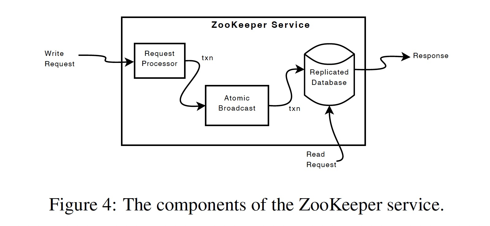

ZooKeeper: wait-free coordination for internet-scale systems
USENIX ATC'10
https://dl.acm.org/doi/10.5555/1855840.1855851
ZooKeeper 提供的接口具有 wait-free 的特点，每个客户端的请求以 FIFO 顺序执行（FIFO client order），而改变 ZooKeeper 状态的请求则具有 linearizablity 的特性（Linearizable writes）。
大型分布式应用往往需要不同形式的协同(coordination)，包括:
- Configuration
- Group membership
- Leader election
- Locks
其中 Locks 作为一种较强的协同服务可以用来实现较弱的协同服务，如 Group membership、Leader election 等。ZooKeeper 实现了一个类似文件系统的接口，具有操作简单、 wait-free 的特点。
Implementing wait-free data objects, however, differentiates Zookeeper significantly from systems based on blocking primitives such as locks.
ZooKeeper 的状态变更依赖 Zab 原子广播协议。所有的写操作都会重定向到 Leader 节点，读操作则使用在 Follower 本地执行。
ZooKeeper 通常用来存储应用的元数据，读操作的比例往往远大于写操作，因此在客户端缓存数据能提高读性能。
ZooKeeper uses a watch mechanism to enable clients to cache data without managing the client cache directly.
ZooKeeper 中的几个概念:
- client: 使用 ZooKeeper 服务的用户
- server: ZooKeeper 集群中的一个节点，即 zookeeper 进程
- znode: ZooKeeper 中的内存数据节点，类比文件系统中的 DIR 或 FILE
- data tree: znode 构成的分层命名空间，类比文件系统
- session: 客户端连接 ZooKeeper 服务时创建的连接句柄
znode
znode 具有两种形态，Regular 类型的 znode 需要用户显示创建和删除；Ephemeral 类型的 znode 由用户创建，session 断开后由系统自动删除。
All znodes store data, and all znodes, except for
ephemeralznodes, can have children.
创建 znode 时可以指定 sequential 标志。znode 存储的数据上限为 1MB。
Nodes created with the sequential flag set have the value of a monotonically increasing counter appended to its name.
Client API
- create(path, data, flags)
- delete(path, version)
- exists(path, watch)
- getData(path, watch)
- setData(path, data, version)
- getChildren(path, watch)
- sync(path)
所有接口都具有两个版本，一个同步一个异步。
The asynchronous API, however, enables an application to have both multiple outstanding ZooKeeper operations and other tasks executed in parallel.
由于读操作可以在任意 server 上进行，因此可能读到旧数据，sync 接口用以解决该问题:
sync causes a server to apply all pending write requests before processing the read without the overhead of a full write.
使用 ZooKeeper API 实现协同元语
通过 ZooKeeper API 可以在客户端实现 Configuration Management、Rendezvous、Group Membership、Locks、Double Barrier 等协同。
lock

rwlock

Implementation
ZooKeeper 的内部模块如下图所示:

写操作发送给 Leader 的 Request Processor 模块，通过计算执行该操作后的状态来判断该操作是否应该被 apply，如果可行则生成一个幂等的事务提交给 Atomic Broadcast 模块，该模块负责复制状态机的一致性，读操作则直接提交给 Replicated Database。
Replicated database 是一个内存数据库，通过定期执行 fuzzy snapshot 来减少回放的时间，由于 WAL 中记录的事务日志具有幂等的特性，snapshot 不需要加锁。
读请求在每台服务器本地处理。每个读请求用其所在服务器看到的最后一个事务的 zxid 进行标记后处理。
ZooKeeper 使用超时机制来检测客户端会话失效。